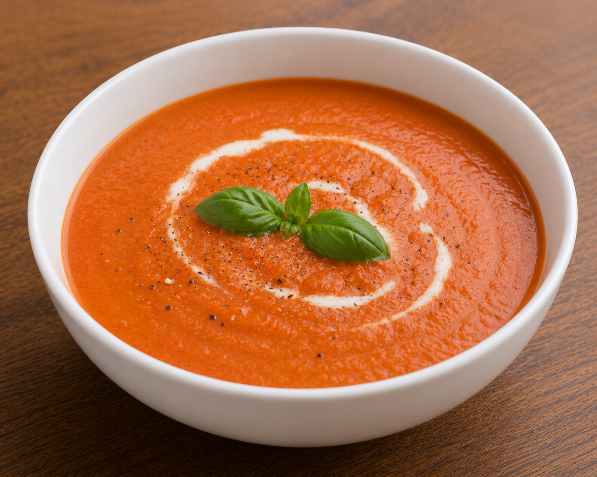

Tomato Soup

Description
The contents of this page are AI slop generated just to complete this HTML project. We have a basic recipe for tomato soup from Google's AI overview with a ChatGPT-generated image to kick things off.
Ingredients
- Canned crushed tomatoes
- Vegetable broth
- Heavy cream
- Butter
- Onion
- Salt
- Pepper
Steps
- Melt butter in a pot and cook diced onions until soft.
- Add the crushed tomatoes and vegetable broth. Simmer for 10 minutes.
- Stir in the heavy cream and season with salt and pepper.
- Blend until smooth.
Home